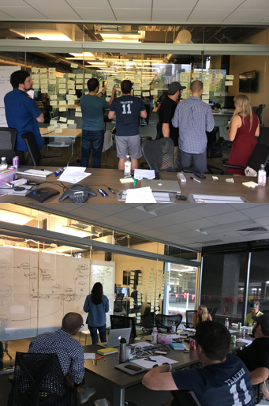

Workflow 2017/18
The Objective
When Pivotal Tracker was first created over 15 years ago, agile development was in its relative infancy and focused on many core agile principles such as incremental progress, and tight feedback loops between team members as well as tight feedback loops with their product’s users.
It was successful in doing this, growing quickly via word of mouth and helping these startups succeed and grow over time. However, as these teams matured, so did their needs. Tracker didn’t do as great a job of supporting the needs of larger teams/companies and additional specialized roles that came with larger companies. Tracker needed to scale with their needs.
The team received lots of requests for workflow improvements of a every type imagineable. But what were they really trying to do, and what were the problems they were trying to solve? and how would we prioritize and solve these problems?
Enter: the Workflow initiative.
The Process
Review input from various existing customer feedback mechanisms including Zendesk tickets, Twitter, surveys and meetups.
Interviews were then conducted with people from different companies in different roles. Often the features requests didn’t line up with the actual problem described, or people were asking for a feature but had very different problems.
Synthesize the data, through various means including affinity mapping. This helped divide the workflow problem space into different categories of pain points. These pain points were further segmented by additional dimensions such as team size, user roles, problem intensity and problem frequency.
Upon completion of data synthesis, the results were then shared with appropriate stakeholders. With the input from these stakeholders and the aid of the product mission, these problems were prioritized on the roadmap to help us deliver solutions quickly and incrementally, thus allowing us to get customer feedback as soon as possible.
Removing bottlenecks on stories was the first problem we tackled.
Before starting this next initiative, to provide room for creativity, several members of the team participated in a cross-functional design sprint to explore possible solutions to the various workflow problems. This allowed myself and the team to spread their wings with little to no constraints. There was no expectation that a tangible deliverable would result from this, but it would at least plant the seeds of imagination across the team that could potentially lead to more in the future.
Below are my designs which incorporated potential solutions to several of the workflow pain points including focus, multistage acceptance by different people and an iteration planning view.